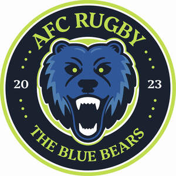
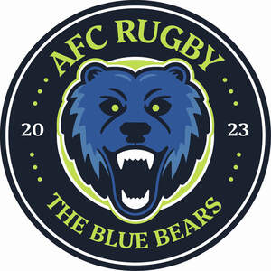
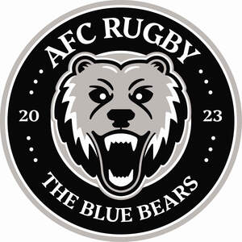
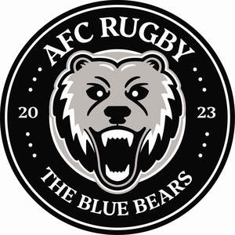

Trade Mark Journal No.2025/042 17 October 2025
UK00004275573 9 October 2025 (16,21,25,41)
Mark 1

Mark 2

Mark 3

Mark 4

- Class 16
- Yearbooks in the field of soccer; Stickers; Bumper stickers; Stickers [stationery]; Adhesive stickers; Stickers [decalcomanias]; Car stickers; Albums for stickers; Decorative stickers for helmets; Decorative stickers for cars; Vehicle bumper stickers; Sticker books; Decals; Sticker albums; Sticker activity books; Wall decals; Cardboard badges; Appliques in the form of decals; Printed emblems [decalcomanias]; Adhesive printed labels; Printed emblems; Placards of paper or cardboard; Adhesive wall decorations of paper; Adhesive labels; Floor decals; Paper banners; Banners of paper; Pins [stationery]; Printed cards; Posters; Notepads; Wrappers [stationery]; Printed flyers; Printed advertising boards of cardboard; Seals [stamps]; Stamps [seals]; Coasters of cardboard; Pencil cups.
- Class 21
- Mugs; Cups and mugs; Coffee mugs; Ceramic mugs; Earthenware mugs; Porcelain mugs; Mugs of porcelain; Beer mugs; China mugs; Mugs of china; Glass mugs; Insulated mugs; Travel mugs; Mug cosies; Mugs made of porcelain; Mugs made of earthenware; Drinking mugs made of porcelain; Mugs made of china; Vacuum mugs; Mugs made of plastic; Mug sleeves; Mugs made of ceramic materials; Mugs of precious metal; Drinkware; Teapots; Coffee cups; Tankards; Coasters (tableware); Pint tankards; Tumblers for use as drinking glasses; Glass cups; Cups; Tumblers; Commemorative statuary cups of porcelain, ceramic, earthenware, terra-cotta or glass; Tea pots; Cups made of earthenware; Cups made of pottery; Insulated bottles [flasks]; Beer steins; Glasses, drinking vessels and barware; Steins; Pint glasses; Beer glasses; Cardboard cups; Drinking cups; Plastic cups; Glassware; Beverage glassware; Insulating sleeve holder for beverage cups; Sippy cups; Bottles; Bottle coolers; Bottle openers; Water bottles; Drinking bottles; Plastic bottles; Plastic water bottles; Reusable bottles; Bottle coolers [receptacles]; Plastic water bottles [empty]; Aluminum water bottles; Aluminum water bottles, empty; Non-electric bottle openers; Water bottles sold empty; Refrigerating bottles; Bottles (Refrigerating -); Covers for water bottles; Reusable plastic water bottles sold empty; Bottle openers incorporating knives; Drinking bottles for sports; Neoprene zippered bottle holders; Sports bottles [empty]; Reusable stainless steel water bottles sold empty; Reusable stainless steel water bottles; Bottles, sold empty.
- Class 25
- Football jerseys; Football shirts; Soccer shirts; Replica football kits; Sports jerseys; Sports shirts; Sport shirts; Sports caps; Clothing; Knitwear [clothing]; Jackets [clothing]; Ready-to-wear clothing; Woolen clothing; Gloves [clothing]; Gloves as clothing; Clothes; Aprons [clothing]; Jerseys [clothing]; Shorts [clothing]; Leather clothing; Clothing of leather; Leather (Clothing of -); Silk clothing; Parts of clothing, footwear and headgear; Knitted clothing; Windproof clothing; Embroidered clothing; Rainproof clothing; Waterproof clothing; Casual clothing; Jackets being sports clothing; Stuff jackets [clothing]; Bottoms [clothing]; Ready-made clothing; Clothing for leisure wear; Infant clothing; Leisure clothing; Ties [clothing]; Clothing for sports; Sports clothing; Drawers [clothing]; Drawers as clothing; Athletic clothing; Clothing for children; Muffs [clothing]; Clothing for babies; Tops [clothing]; Clothing for infants; Water-resistant clothing; Weatherproof clothing; Beach clothing; Thermal clothing; Men's clothing; Mitts [clothing]; Printed t-shirts; T-shirts; Tee-shirts.
- Class 41
- Organisation of football competitions; Organisation of sports events in the field of football; Football academy services; Entertainment in the nature of football games; Organization of soccer games; Sports coaching; Coaching in the field of sports; Organising of football events; Soccer camps; Organization of soccer competitions; Training of sports players; Conducting of soccer games; Arranging of soccer games; Entertainment in the nature of soccer games; Soccer camp services; Sports club services; Services for the organisation of football events; Organisation of sports tournaments; Tournaments (Staging of sports -); Production of films on aspects of association football; Sports coaching services; Competitions (Organization of sports -); Organization of sports competitions; Organising of sports competitions and sports events; Organising of sports events and of sports competitions; Organisation of sports competitions; Organising of sports and sports events; Tuition in sports; Sports tuition; Sports training.
AFC Rugby Ltd